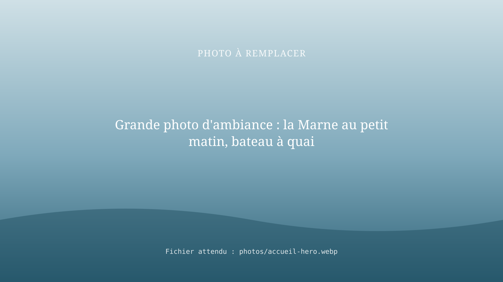
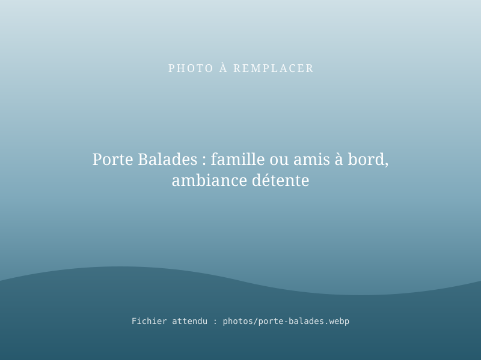
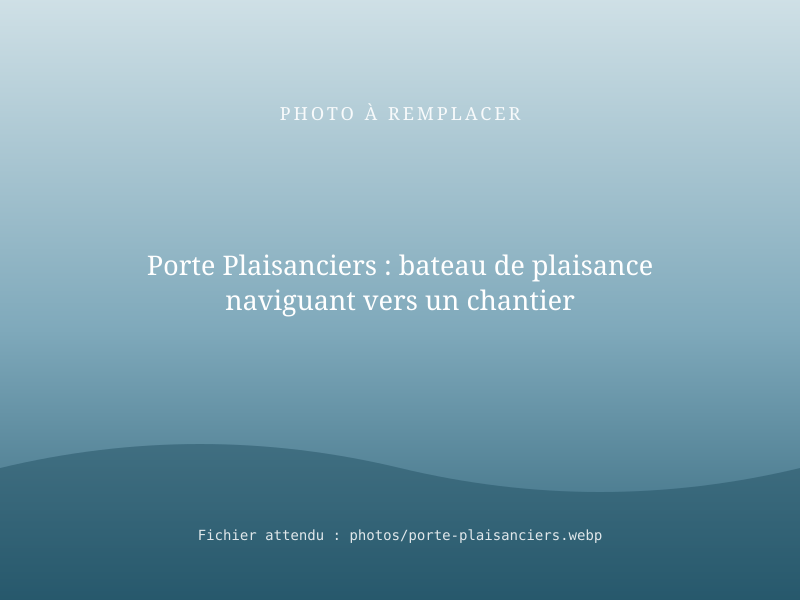
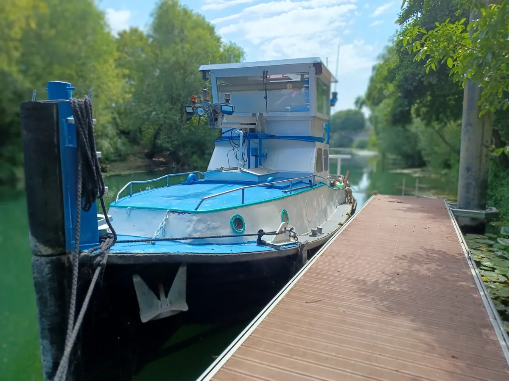
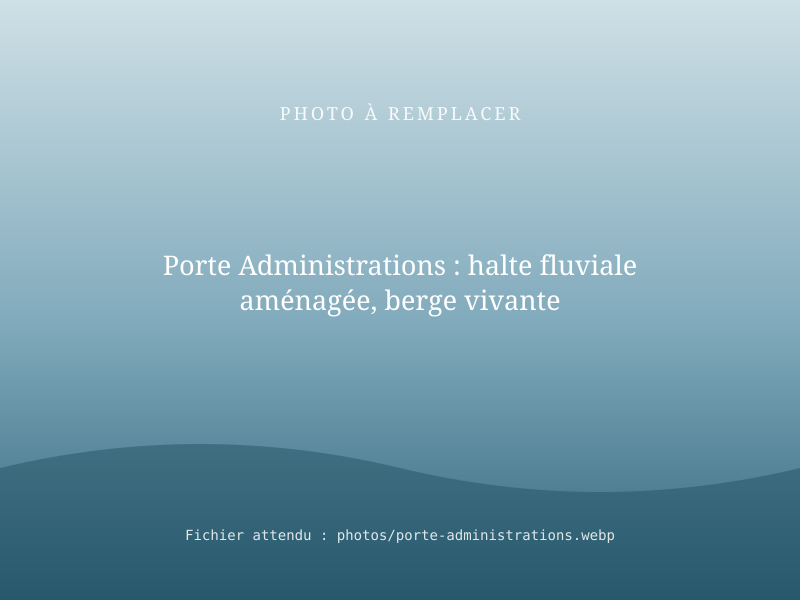
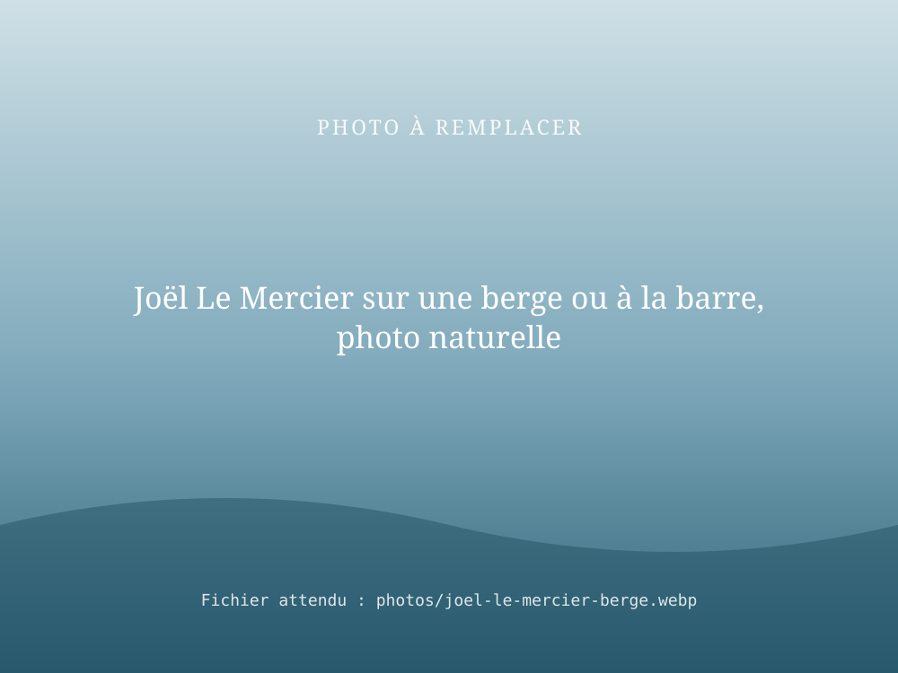

Entreprise fluviale · Bassin de la Seine · Canal de Bourgogne
Exploiter, conseiller et faire naviguer : la voie d'eau, notre métier
RivesEnRêves fait vivre les rivières et les canaux : balades et nuits sur l'eau, services aux plaisanciers, solutions fluviales pour les entreprises et accompagnement des collectivités. Choisissez votre porte d'entrée.

Je veux faire une balade
Balades sur la Seine et la Marne à bord du Seine et Marne, location pour vos événements et nuits insolites en gîte nautique.
Découvrir les balades
J'ai un bateau
Convoyage vers les chantiers avec toutes les démarches administratives, renflouement, découpe de bateaux.
Voir les services
Je suis un professionnel
Études de report modal vers le fluvial financées par VNF, conseil en logistique fluviale, interventions sur l'eau.
Solutions professionnelles
Je représente une administration
Conseil en développement du tourisme fluvial, de l'idée à la mise en œuvre : faisabilité, bateau, haltes, exploitation.
Notre accompagnementUne expérience de terrain
Des berges vides devenues des lieux de vie
Notre expérience : 4 haltes fluviales exploitées sur la Marne de 2019 à 2025, dont 2 à La Ferté-sous-Jouarre, créées sur des sites où il n'y avait rien à l'origine.

RivesEnRêves
Une entreprise fluviale, un fondateur de terrain
RivesEnRêves est une entreprise fluviale fondée par Joël Le Mercier, qui propose des balades en bateau, des services aux plaisanciers, des études de report modal vers le fluvial financées par VNF et des services aux professionnels, et du conseil en développement du tourisme fluvial aux administrations.
Notre territoire : le bassin de la Seine (Seine amont, Seine aval, canaux parisiens, Marne) et le Canal de Bourgogne.
Joël Le Mercier a bâti et exploité des haltes fluviales sur la Marne, convoyé et sauvé des bateaux, conseillé VNF en logistique et accompagné une collectivité dans l'achat de son bateau. Cette expérience de terrain nourrit chacun de nos services.
Ils nous ont fait confiance
Des références vérifiables, auprès des acteurs de la voie d'eau et des territoires.
Mission de conseil en logistique fluviale ; études de report modal vers le fluvial financées par VNF.
Site de Fublaines (Seine-et-Marne), occupé dans le cadre d'une convention.
Accompagnement de la communauté de communes dans l'achat d'un bateau pour le Canal de Bourgogne.
2 des 4 haltes fluviales exploitées sur la Marne de 2019 à 2025.